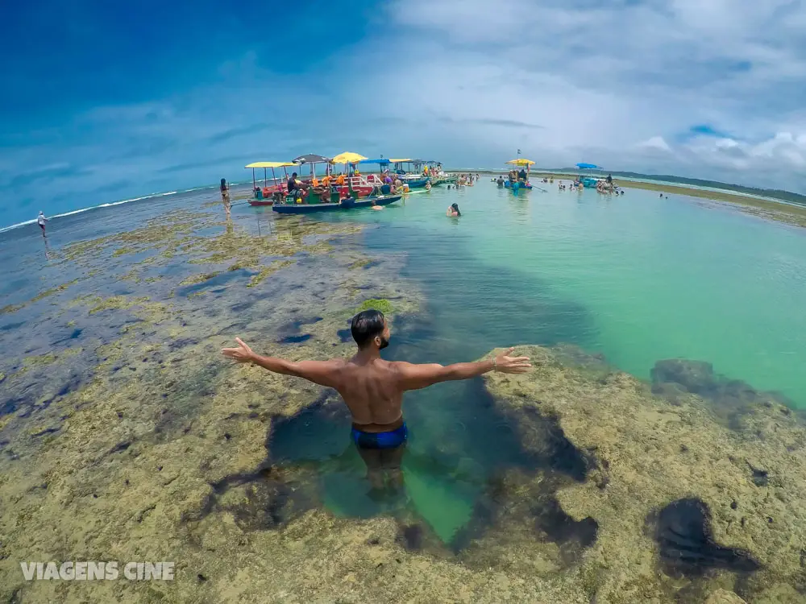
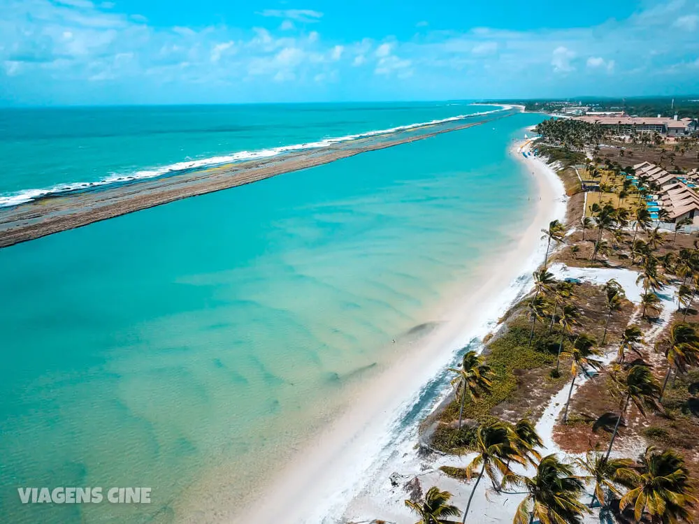

Top 3 Melhores Lugares para Viajar no Brasil
1 – São Miguel dos Milagres e o Litoral Norte de Alagoas

Apesar de Maceió ser a capital do Estado, de onde é possível fazer vários passeios pelo litoral de Alagoas, nossa dica é buscar um destino mais sossegado.
Maragogi é ainda mais famosa e um dos lugares para viajar mais procurados de Alagoas. É um dos destinos que entra em várias listas dos melhores do Brasil e também apelidado de Caribe Brasileiro.
O que você precisa saber antes de ir
- Maragogi ou Maceió não são as melhores respostas para um destino mais tranquilo e reservado. Essas cidades são bem turísticas, com ampla infraestrutura e grande fluxo de turistas.
- O litoral norte de Alagoas reserva algumas praias paradisíacas, no caminho entre Maceió e Maragogi. A estrada é conhecida como Rota Ecológica.
- Porto de Pedras e São Miguel dos Milagres são dois dos destinos em alta nessa região.
- Se a sua ideia de viagem perfeita está associada a ainda mais de privacidade, São Miguel dos Milagres e Porto de Pedras são a melhor opção. O turismo local apostou em pousadas charmosas e pé na areia, ideais para casais.
- Uma dica de pousada de charme na região é a Pousada Côté Sud, em São Miguel dos Milagres.
- Não espere charme fora das pousadas. Mas mesmo assim, há uma boa oferta de restaurantes. Mas é importante reservar com antecedência.
O que fazer em São Miguel dos Milagres: Dicas e Onde Ficar
- Pontos Positivos: As praias possuem águas tranquilas e mornas, daquele jeitinho que todo mundo sonha. Por isso, a região é conhecida como Caribe Brasileiro.
- Pontos Negativos: É importante visitar a região na época da maré baixa. Na maré alta, boa parte do encanto das praias e de suas piscinas naturais fica prejudicada.
- Como Chegar: A melhor opção é alugar um carro, já que não há opção de transporte público em alguns destinos da região.
- Onde Ficar: Há várias opções de pousadas charmosas em São Miguel dos Milagres. Nós ficamos na charmosa Pousada Côté Sud.
- Dê uma olhadinha também na Pousada do Alto, em Japaratinga. A piscina com borda infinita é inesquecível.
- Melhor Época: Outubro, Novembro, Dezembro e Janeiro são os melhores meses. O verão é quando o mar está mais cristalino e há menor probabilidade de chuvas. Os meses de Abril a Agosto costumam ser os mais chuvosos por lá.
- Quanto Dias: 7 dias é o tempo ideal para explorar a região. Escolha uma ou duas bases no litoral norte, como em São Miguel dos Milagres, Porto de Pedras, Japaratinga ou ainda em algumas das praias ao norte de Maragogi, que são mais tranquilas.
- Quanto Custa: R$ 350,00/dia por pessoa. A demanda pelo litoral norte de Alagoas tem crescido muito, o que pode encarecer bastante as hospedagens. São Miguel dos Milagres é onde você pode encontrar preços mais caros. Japaratinga e Maragogi possuem opções mais baratas (média de gastos de R$ 250,00/dia por pessoa).
2 – Jericoacoara (Jijoca de Jericoacoara), Ceará

O que você precisa saber antes de ir
A fama (e também o fluxo de visitantes) aumentou depois que foi aberto o Aeroporto Regional Comandante Ariston Pessoa, em Cruz, cidade que fica bem mais próxima de Jericoacoara.
Dessa forma, a distância de 4 horas a partir de Fortaleza diminuiu para pouco mais de 1 hora de viagem. Mas a tranquilidade está cada vez mais ameaçada.
A duna do pôr do sol, um dos pontos turísticos mais famosos de Jericoacoara, vive lotada.
Para tirar uma foto na Pedra Furada, você pode ter que encarar uma fila de 20 minutos.
Mas como não amar as incríveis paisagens e a vibe de Jeri? E todo mundo merece um pouco de relax nas redes da Lagoa do Paraíso.
Tudo o que você precisa saber sobre Jericoacoara – Dicas e Roteiro de Viagem
Pontos Positivos: Dentro de um parque nacional, a região é ainda preservada e mantém aspectos rústicos, como ruas de areia e poucas construções. Por enquanto, ainda está garantido que quem visita Jeri encontre um destino paradisíaco.
Pontos Negativos: A dificuldade de acesso é um obstáculo. Jeri está cercada de areia, então para chegar somente de jardineira ou com veículos 4×4. Os que se aventuram em ir com carros de passeio, devem deixá-los em estacionamentos na entrada da vila.
Dicas de Viagem
Como Chegar: Para quem vem de Fortaleza, a opção mais confortável é reservar um transfer a partir de Jericoacoara. A Jeri Off Road é uma das empresas que operam esse roteiro. Os voos até o Aeroporto de Jericoacoara ainda são caros, portanto ainda não é uma opção muito acessível.
Onde Ficar: Apesar de suas ruas de areia dentro do Parque Nacional, Jericoacoara tem muitas opções de hospedagem. Consulte nosso post com as dicas de melhores pousadas em Jericoacoara. Algumas das melhores opções são o Hotel Hurricane Jeri e a Pousada Baobá. Nós ficamos na Pousada Carcará, mas achamos o preço muito alto para o que a pousada oferece.
Preste atenção nessa pegadinha
Melhor Época: O primeiro semestre é a época mais chuvosa, isso inclui também os meses de verão (Janeiro e Fevereiro). A partir de maio as chuvas começam a diminuir. Julho, Agosto e Setembro são meses após o período de chuva, em que as lagoas estarão mais cheias. Para quem gosta de kitesurf, o segundo semestre é o auge da temporada do esporte por lá.
Quanto Dias: 4 dias já são suficientes para conhecer a região. Se tiver mais tempo, pode conciliar essa viagem com os Lençóis Maranhenses, fazendo a Rota das Emoções. Ou ainda visitar alguns outros destinos do litoral oeste do Ceará, como Icaraizinho de Amontoada ou Flecheiras.
Quanto Custa: A média é de R$ 350,00/dia por pessoa. Com o número de visitantes cada vez maior, os preços de pousadas inflacionaram um pouco, mas ainda é possível encontrar alguns achados. Os passeios custam em média R$ 75,00 por pessoa.
3 – Porto de Galinhas, Ipojuca

O que você precisa saber
Porto de Galinhas fica no munícipio de Ipojuca, em Pernambuco.
Combina fácil acesso, boa infraestrutura de hotéis e restaurantes, com praias paradisíacas (Muro Alto, Maracaípe e a vizinha Praia dos Carneiros são os destaques).
É um ótimo destino para famílias com crianças, por conta do mar super tranquilo em algumas dessas praias.
Anote essa dica:
A grande atração são as famosas piscinas naturais de Porto de Galinhas. Um passeio de jangada até elas é um programa imperdível.
Não deixe de contratar um fotógrafo (ou o próprio jangadeiro, muitos deles também fazem fotos) e faça um ensaio fotográfico com os peixinhos. Vale super a pena e custa menos do que você imagina.
Por essas e outras, não foi à toa que Porto de Galinhas pulou da oitava posição em 2015, para o Top 5 do ranking do Travelers’ Choice do TripAdvisor em 2018. Na lista dos destinos de sonhos do Skyscanner, ficou na terceira posição.
Guia Completo:
O que fazer em Porto de Galinhas – Dicas e Roteiro de Viagem
Pontos Positivos: A hotelaria e gastronomia de Porto de Galinhas cresceram muito nos últimos anos e proporcionam aos visitantes uma boa combinação de infraestrutura e belezas naturais. De hotéis de luxo até pousadas econômicas, há opções para todos os gostos.
Pontos Negativos: O excesso de turistas incomoda um pouco nas praias (especialmente a praia do centro), então se puder evite a alta temporada. Veja também a tábua de marés: as piscinas naturais só ficam legais na maré baixa.
Lugares para Viajar no Brasil: Porto de Galinhas – Dicas de Viagem
Como Chegar: Porto de Galinhas fica a cerca de 1 hora de distância de Recife. Ir de carro é uma das melhores opções, mas há várias opções de transportes públicos e alternativos a partir do aeroporto. Quem prefere um pouco mais de comodidade, recomendo fechar um transfer com a Sol e Mar Tour. Não esqueça de mencionar que você é leitor do Viagens Cinematográficas.
Onde Ficar: São muitas opções de pousadas simples até hotéis de luxo. Para quem busca economizar, a dica é procurar algo no centro, como a Pousada Portomares. Para quem quer mais luxo ou estrutura de lazer, aposte nos resorts de, como o fantástico Samoa Beach Resort. Finalmente, para quem procura romance e um clima mais descontraído, vale apostar na pousadas pé na areia como a Pousada Xalés de Maracaípe.
Melhor Época: Setembro, Outubro e Novembro são ótimos meses, já fora da época das chuvas e ainda sem o movimento da alta temporada.
A pergunta que não quer calar
Quanto Dias: 7 dias é o tempo ideal para fazer todos os passeios bate-volta a partir de Porto de Galinhas. Mas em 4 dias já dá para curtir bastante.
Quanto Custa: R$ 300,00/dia por pessoa. Alguns dos lugares próximos podem ser visitados em carro próprio, o que pode representar uma economia para grupos acima de 2 pessoas. A vila de Porto de Galinhas é bem ampla e possui uma grande oferta de restaurantes, lanchonetes e pizzarias. Os gastos com alimentação podem variar muito de acordo com suas escolhas.
| Lugares |
Mochilão |
Econômico |
Intermediário |
Luxo |
333
| São Miguel dos Milagres e o Litoral Norte de Alagoas |
R$1.550 |
R$1.956 |
R$2.800 |
R$5.000 |
| Jericoacoara |
R$1.741 |
R$1.900 |
R$2.360 |
R$$3.890 |
| Porto de Galinhas |
R$1.200 |
R$1.124,20 |
R$1.722,40 |
R$3.708 |
Lembrando que os preços variam durante as temporadas, então sempre cheque antes de viajar!!